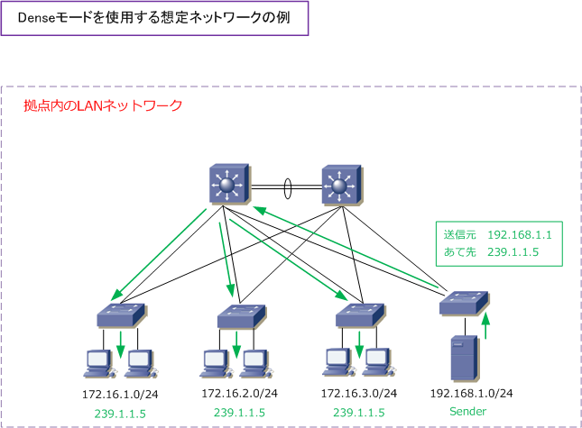
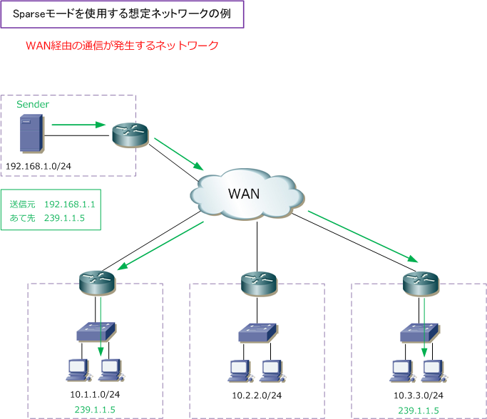

Multicast Routing Protocol - Dense mode / Sparse mode
マルチキャストルーティングプロトコル - 2つの動作モード
マルチキャストルーティングプロトコルにはDenseモードとSparseモードの大きく2種類のモードがあります。 Denseモードの場合は「送信元ツリー」が使用され、Sparseモードの場合は「送信元ツリーと共有ツリー」を 組み合わせて使用します。
| 動作モード | 説明 |
|---|---|
| マルチキャストルーティングプロトコル - Denseモード | 送信元ツリーを使用 |
| マルチキャストルーティングプロトコル - Sparseモード | 送信元ツリーと共有ツリーを組み合わせて使用 |
Denseモード、Sparseモードのどちらを使用するのかは、マルチキャストパケットを送信するSenderの 配置状況、受信するReceiverの配置状況、ネットワークの帯域幅から判断して決めるのが一般的です。 それでは、それぞれのモードで想定しているネットワーク環境、動作概要などについて解説していきます。
マルチキャストルーティングプロトコル - Denseモード
Denseは「密集」という意味です。Denseモードは、マルチキャストグループのメンバーがネットワークに 高密度に位置してネットワークの帯域幅に余裕がある場合に使用します。つまりSenderとReceiverともに LAN上で狭い範囲に位置する場合（ 1つの拠点内のGigabitEthernet LAN等 ）に使用します。ただし1つの 拠点内LANであっても、音声システムがある場合はDenseモードでなくSparseモードを使用することが多い。

Denseモードのマルチキャストルーティングプロトコルでは、マルチキャストのトラフィックを定期的に フラッディングします。Denseモードのマルチキャストルーティングプロトコルには、PIM-DM、DVMRP MOSPFなどがあります。一般的にはPIM-DMが使用されます。基本的な共通動作として、Receiverが存在 する可能性のあるインターフェース全てにマルチキャストパケットを送信して、その後にReceiverが存在 しないと判明したインターフェースへはフラッディングをしない Flood & Prune という動作となります。
マルチキャストルーティングプロトコル - Sparseモード
Sparseは「希薄」という意味です。Sparseモードは、マルチキャストグループのメンバーがネットワークに 散在して位置してネットワークの帯域幅に余裕がない場合に使用します。つまり、SenderとReceiverともに WANを経由して通信する場合などで使用します。

Sparseモードのマルチキャストルーティングプロトコルでは、最初に空のディストリビューションツリーを 作り、そのツリーに対して明示的に Join Request（参加要求）があった場合にのみ、そのルータをツリーに 追加します。ツリーの中心にはRP（ランデブーポイント）と呼ばれるルータが存在して、マルチキャストの トラフィックを受信したいホストが接続されているルータはRPにその情報が登録されます。そしてSenderは RPにマルチキャストを送信して、RPを経由してRecevierへ流れ始めると、パス情報を最適化していきます。
DenseモードのFlood & Pruneモデルに対して、SparseモードはExplicit Join（明示的な参加）モデルです。 SparseモードのマルチキャストルーティングプロトコルにはPIM-SM、CBTがあります。一般的にはPIM-SM が企業ネットワークで使用されています。